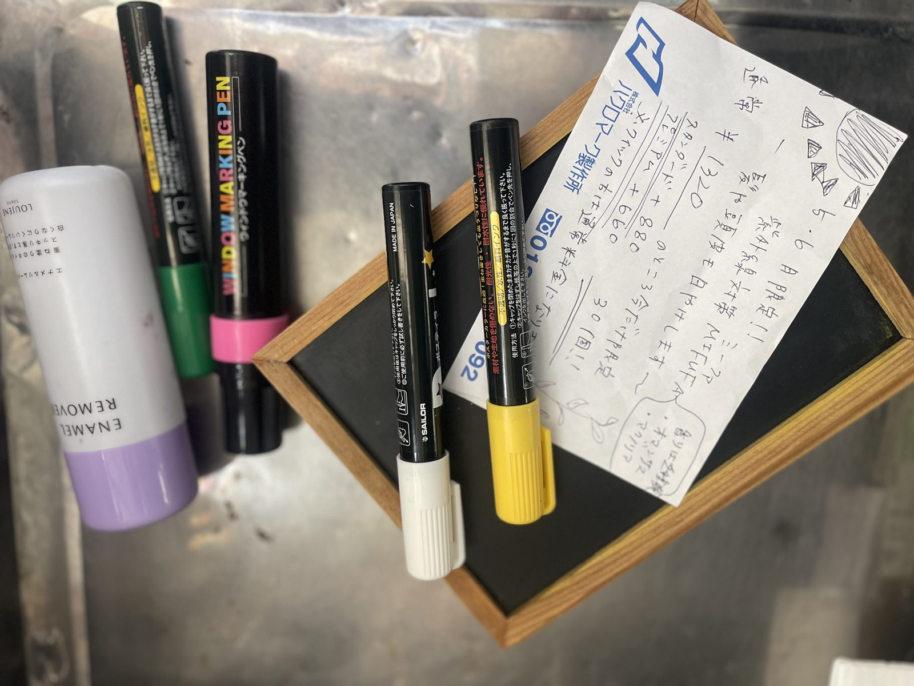

日々の何気ない環境。
おはようございます。
アトリエ・ナインの菅野です。
ゴールデンウィーク真っ只中ですね。
ウチも子供のいるスタッフは休みになっているので、ゆるーく出勤できるスタッフで営業しております。
＜でも、予約はお陰様でなので、やることは多いですが、、、。＞
最近ずっとサロンワークが忙しすぎてなかなか更新できませんでしたが、、。
その間にアトリエ・ナイン もメンバーの異動などもあり、新体制になってだんだんお店もみんな慣れてくれてきています。
自分はずっと森合店にしかいませんが、岡部店も阿部が７月末で産休に入る予定なので、３月からショートくんが新たに店長に就任してくれ、すごく頑張って店長をやってくれています。
今まで自分もサロンワークが抜け出せなくて、管理が不十分な部分があったのですが、ショートくんはじめ、岡部店スタッフ全員が本当頑張ってくれています。
また、森合店も新しいスタッフを迎え、すごく活気の良い雰囲気になりました。
仕事も自分たちで考えて動いてくれているので、指示しなくても自分たちでお店を良くしようと色々やってくれているので助かっています。
掃除分担の表やキャンペーンなど、自分たちが働きやすい環境を自分たちでやってくれる。
当たり前のことなんですが、これが凄く大切だとスタッフに教えてもらった気がします。


本当いいスタッフに恵まれています。
さて、自分ももっと自分の仕事をしていかないと、、、。
前回お知らせした、追加求人も何件か問い合わせが来ているので、ボチボチ終了いたします。
あとはゆるーく、求人を募集する形なので、確実に入れる枠があるのは今だけなので、気になる方は早めにお問い合わせください。
ではまた。
株式会社 アトリエ・ナイン 代表 菅野
福島市で髪質改善、ヘッドスパサロンを展開しており、２０１９年１０月には待望の２店舗目をオープン。
オープンしてから３年目に法人化。オープン５年目に突入。サロンの労働環境改善のため社員の週休２日を実現。サロンワーク８時間で残業なし。スタッフに働きやす環境整備をもっとうに経営を心がけております。
求人に少しでも興味のある方はお気軽にお問い合わせください。
サロン見学や求人の概要の問合せ、相談など、なんでもお待ちしております。
LINE@:@jnp9523c
までお問い合わせください。